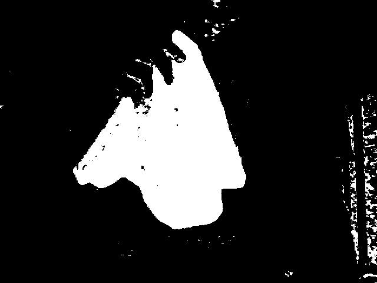
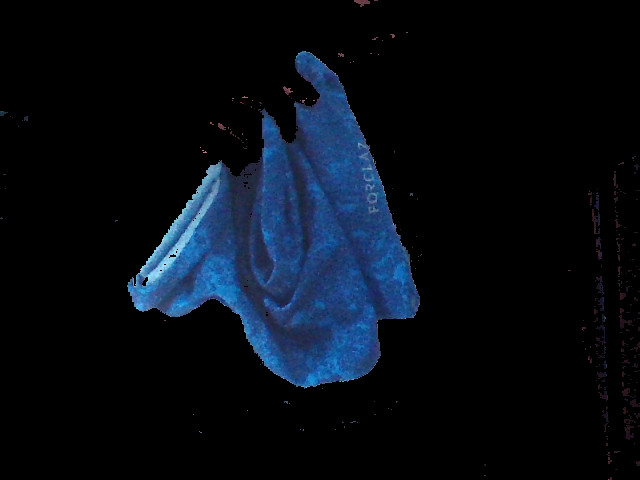
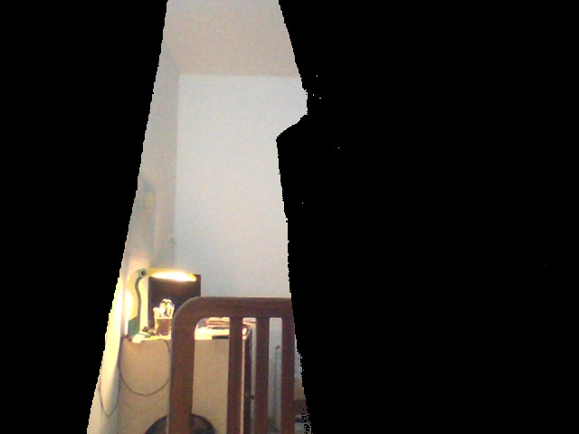
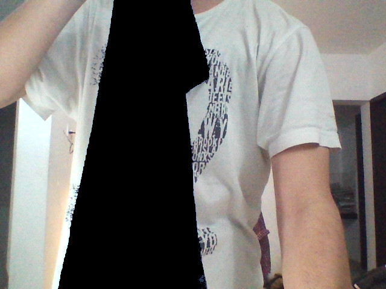
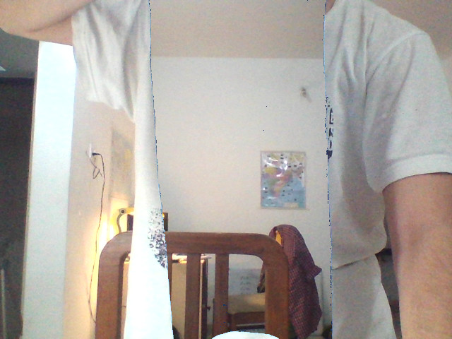

Invisibility Using OpenCV
Table of Contents
OpenCV is the go-to library for all your image processing needs. I used it to create my invisibility project.

An object is invisible if you can see through it. The problem then becomes how do you show the background instead of the foreground object. A simple idea is to take a photo of the background first and then replace the area the foreground object covers with the corresponding background region. This is the entire algorithm.
We first take a photo of the background. This now serves our replacement image. In this implementation, we will replace a particular colour with the background. This is similar to the green screen in a movie.
The green region in the frame is replaced with some computer-generated background.
By Iman Crosson - Iman Crosson's Alphacat channel, YouTube videos, "President Obama on Death of Osama bin Laden (SPOOF)" and "President Obama on Death of Osama SPOOF- BEHIND THE SCENES", CC BY-SA 3.0, Source
In this project, I have used a blue colour cloth to do the same. Now, when I walk into the frame holding the cloth, the program will replace the pixels of the cloth with pixels from the initial background image. Although any colour can be chosen, it should be noted that anything else you wear should not be of the same colour. One of my friends chose to mask the colour red. He ended up vanishing parts of his face. I'll let you guess which ones.
Implementation
Masking
Before we start implementing, I'll explain a bit about masking. Masking is a way to select a region of the frame. It just shows the parts of the frame which are important.
First, we need to convert the colour of the frame from BGR (Blue Green Red, which is the default way OpenCV reads image instead of traditional RGB) to HSV (Hue Saturation Value).
hsv = cv2.cvtColor(frame, cv2.COLOR_BGR2HSV)
This conversion makes it easier to represent the colour range to select.
low_thresh = np.array([90,90,2])
high_thresh = np.array([180, 255, 255])
These particular values are based on trial and error such that it represents the required range of blue colour. We then create a mask based on this threshold and the frame.
mask = cv2.inRange(hsv, low_thresh, high_thresh)

The white region represents RGB values of 255,255,255 and the black region represents RGB values of 0,0,0.
Then, to show only the blue region, we use the bitwise_and function.
filtered = cv2.bitwise_and(img1, img2, mask=mask)
What it essentially does is a pixel-wise and operation on the image1 and image2. We pass in the mask to select the region where we want the and operation to take place. The dark region in the mask remains the same. If we pass image1 and image2, we will get a blend of colours resulting from the anding of pixels of each image. For example, if the pixel of image 1 is 100 and the pixel of image 2 is 255 and the mask is 255, we will get a resulting pixel of 100. However, if the values of the pixels were the same and the mask was 0 then the resulting pixel would be 0.
In our case, we want to select just the region of our frame with blue colour. Since the bitwise_and function requires two parameters for the images and the anding between the same image is the same image, we pass both the image 1 and image 2 parameters as our frame. This gives us the masked region of our current frame.

You can read the whole code below.
_, frame = cap.read()
hsv = cv2.cvtColor(frame, cv2.COLOR_BGR2HSV)
low_thresh = np.array([90,90,2])
high_thresh = np.array([180, 255, 255])
mask = cv2.inRange(hsv, low_thresh, high_thresh)
filtered = cv2.bitwise_and(frame, frame, mask=mask)
cv2.imshow("mask", mask)
cv2.imshow("filtered", filtered)
cv2.imshow("Frame", frame)
Invisibility
Now that we know the building blocks, we can start building our invisibility project.
First, we need to take a photo of the background. To do this we simply open the camera and take an image.
cap = cv2.VideoCapture(0)
start = time.time()
"""get background"""
while int(time.time() - start) < 3: # wait for seconds
global background
_, background = cap.read()
cv2.imshow("Background", background)
cv2.waitKey(1)
In the code above, I am also waiting for 3 seconds. This is just enough time for pressing a key and moving out of the frame.
We now take the foreground image and apply the threshold to it. This gives us a mask of the object we want to remove.
_, frame = cap.read()
hsv = cv2.cvtColor(frame, cv2.COLOR_BGR2HSV)
mask = cv2.inRange(hsv, low_thresh, high_thresh)
invisible1 = cv2.bitwise_and(background, background , mask = mask)
Here, we create the mask from the foreground image but use the background image to replace it. This is opposite to what we had done in the example above where we have used the mask to select the region from the same image.

There is one problem though. The rest of the image has black pixels because of the mask. We need to fill the rest of the image with the foreground. For this, we need an inverse mask. Inverting a mask is very simple. We know that the highest value in the mask is 255. To invert the mask all we need to do is subtract 255 with the value of the pixel in the mask. That means if the value of a pixel is 0 then 255 - 0 will be 255. Similarly, 255 will become 0.
mask_inv = 255 - mask
This subtracts 255 with each value in the mask.
We can then create the foreground as
invisible2 = cv2.bitwise_and(frame, frame, mask=mask_inv)

Finally, we add both the background and the foreground to get the final image.
invisible = cv2.add(invisible1, invisible2)
cv2.imshow("Invisibility", invisible)
That's the entire logic of the code. We get the result as

You can grab the entire code here.
Thanks for reading 😎